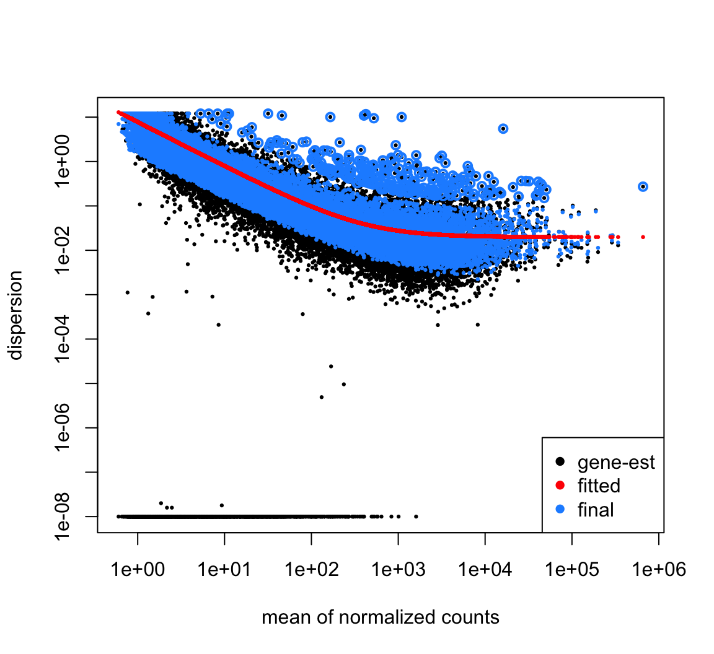
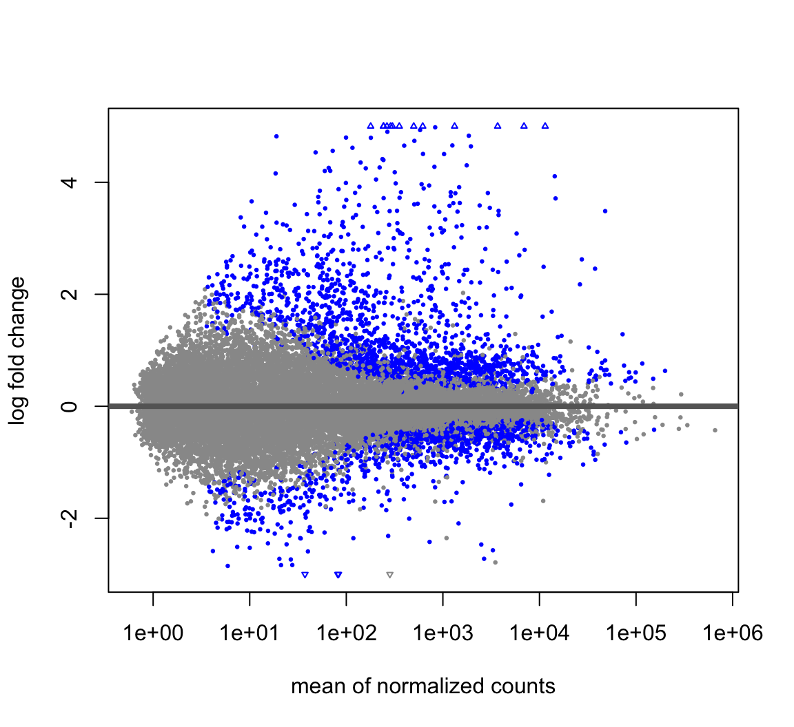

Chapter 4 Differential testing
All the steps of differential expression analysis can be done with a single call of the function DESeq().
dds_factors <- DESeqDataSetFromMatrix(countData = round(data[,-c(1)]),
colData = meta,
design = ~ Factors)## converting counts to integer mode## Warning in DESeqDataSet(se, design = design, ignoreRank): some variables in design formula are characters, converting to factors## estimating size factors## estimating dispersions## gene-wise dispersion estimates## mean-dispersion relationship## final dispersion estimates## fitting model and testingPlot dispertion estimates:
 To tell DESeq2 which groups we wish to compare, we supply the contrasts we would like to make using the contrast argument.
contrast_pbs <- c("Factors", "KO_PBS", "Control_PBS")
contrast_lps <- c("Factors", "KO_LPS", "Control_LPS")To build our results table we will use the results() function.
res_unshrunken_pbs <- results(dds_analysis, contrast=contrast_pbs, alpha = 0.05)
res_unshrunken_lps <- results(dds_analysis, contrast=contrast_lps, alpha = 0.05)To generate more accurate log2 fold change estimates, DESeq2 allows for the shrinkage of the log2 fold changes estimates toward zero when the information for a gene is low.
## using 'normal' for LFC shrinkage, the Normal prior from Love et al (2014).
##
## Note that type='apeglm' and type='ashr' have shown to have less bias than type='normal'.
## See ?lfcShrink for more details on shrinkage type, and the DESeq2 vignette.
## Reference: https://doi.org/10.1093/bioinformatics/bty895## using 'normal' for LFC shrinkage, the Normal prior from Love et al (2014).
##
## Note that type='apeglm' and type='ashr' have shown to have less bias than type='normal'.
## See ?lfcShrink for more details on shrinkage type, and the DESeq2 vignette.
## Reference: https://doi.org/10.1093/bioinformatics/bty895To illustrate the effect of log2 foldchange shrinkage we will use the MA plot. The MA plot shows the mean of the normalized counts versus the log2 foldchanges for all genes tested. The genes that are significantly DE are colored.

Task 1: Plot the unshrunken results and save the plot as pdf. Are there any differences between unshrunken and shrunken results? Provide a brief explanation.
Check the results summary for PBS and LPS comparisons:
##
## out of 22783 with nonzero total read count
## adjusted p-value < 0.05
## LFC > 0 (up) : 1658, 7.3%
## LFC < 0 (down) : 1366, 6%
## outliers [1] : 58, 0.25%
## low counts [2] : 3976, 17%
## (mean count < 4)
## [1] see 'cooksCutoff' argument of ?results
## [2] see 'independentFiltering' argument of ?results##
## out of 22783 with nonzero total read count
## adjusted p-value < 0.05
## LFC > 0 (up) : 2604, 11%
## LFC < 0 (down) : 2650, 12%
## outliers [1] : 58, 0.25%
## low counts [2] : 3534, 16%
## (mean count < 3)
## [1] see 'cooksCutoff' argument of ?results
## [2] see 'independentFiltering' argument of ?resultsNow we are ready to extract significant differentially expressed genes. We will define significant genes as those satisfying the |FDR p-value < 0.05| and |log2(Fold Change)| > 0.58:
Convert the results table into a tibble:
res_pbs_tb <- res_pbs %>%
data.frame() %>%
rownames_to_column(var="gene") %>%
as_tibble()
res_lps_tb <- res_lps %>%
data.frame() %>%
rownames_to_column(var="gene") %>%
as_tibble()Select significant genes:
sig_pbs <- res_pbs_tb %>%
dplyr::filter(padj < padj.cutoff & abs(log2FoldChange) >= lfc.cutoff)
sig_lps <- res_lps_tb %>%
dplyr::filter(padj < padj.cutoff & abs(log2FoldChange) >= lfc.cutoff)| gene | baseMean | log2FoldChange | lfcSE | stat | pvalue | padj |
|---|---|---|---|---|---|---|
| ENSMUSG00000025907 | 1336.659849 | -0.6181067 | 0.1498275 | -4.125053 | 0.0000371 | 0.0006525 |
| ENSMUSG00000098234 | 124.162031 | 1.2350151 | 0.3683577 | 3.356820 | 0.0007884 | 0.0081581 |
| ENSMUSG00000104170 | 6.110599 | -2.0618792 | 0.6755077 | -3.124092 | 0.0017835 | 0.0158482 |
| ENSMUSG00000082193 | 893.899515 | 0.6408057 | 0.1318862 | 4.858816 | 0.0000012 | 0.0000349 |
| ENSMUSG00000043716 | 4483.398050 | 0.6343141 | 0.0997568 | 6.358617 | 0.0000000 | 0.0000000 |
| ENSMUSG00000025921 | 339.426837 | -0.7060597 | 0.2085612 | -3.383876 | 0.0007147 | 0.0075408 |
| gene | baseMean | log2FoldChange | lfcSE | stat | pvalue | padj |
|---|---|---|---|---|---|---|
| ENSMUSG00000025907 | 1336.65985 | -0.6522114 | 0.1512123 | -4.313503 | 0.0000161 | 0.0001486 |
| ENSMUSG00000103845 | 108.10608 | -0.9919055 | 0.2279103 | -4.353331 | 0.0000134 | 0.0001269 |
| ENSMUSG00000076135 | 45.67683 | 0.8741138 | 0.3262560 | 2.675268 | 0.0074669 | 0.0302700 |
| ENSMUSG00000061024 | 643.74312 | 0.6301913 | 0.1734136 | 3.632948 | 0.0002802 | 0.0018652 |
| ENSMUSG00000079671 | 285.23809 | -1.1868058 | 0.2880283 | -4.125536 | 0.0000370 | 0.0003128 |
| ENSMUSG00000098234 | 124.16203 | 0.9715327 | 0.3633899 | 2.668153 | 0.0076269 | 0.0307756 |
Intriguingly, the number of significant genes is almost twice more in the comparison with LPS compared to PBS-treated data.
## [1] 2039## [1] 4045